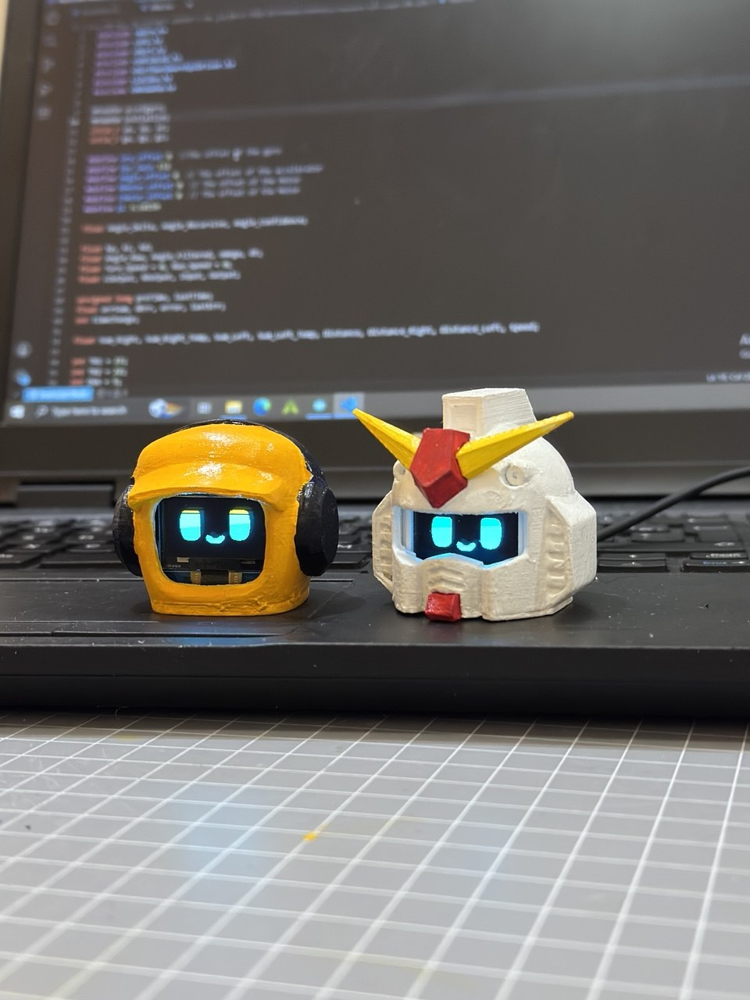
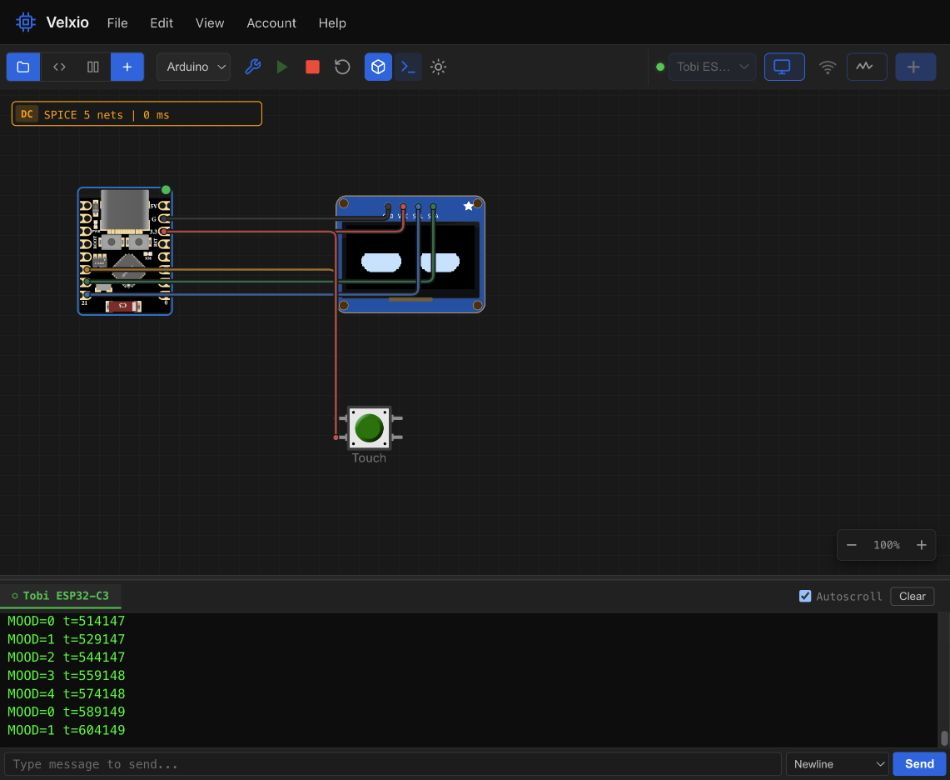
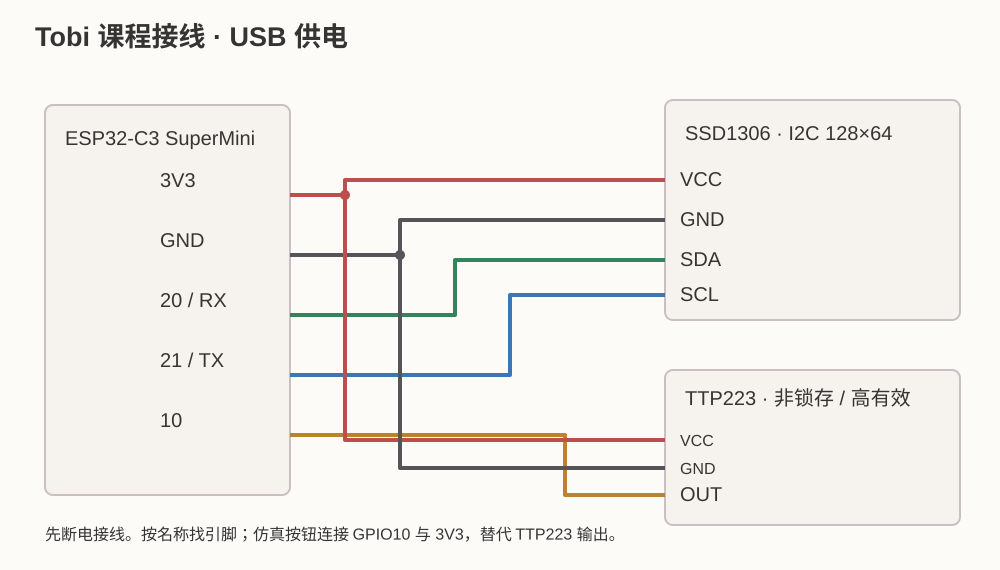
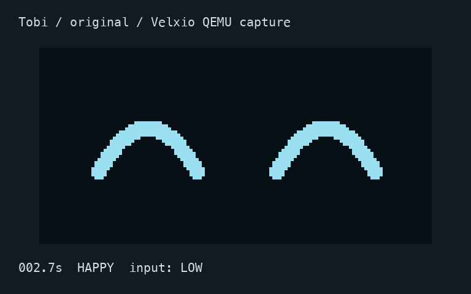
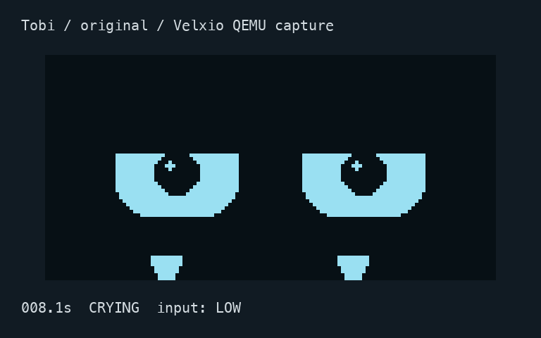
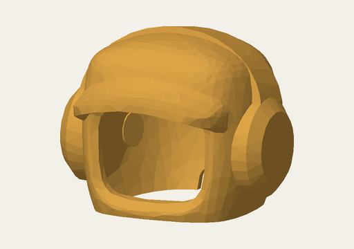
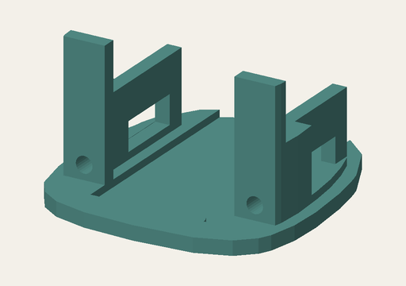
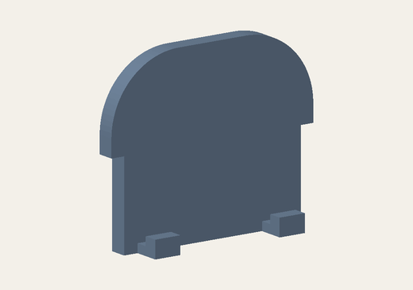
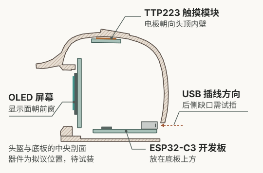

Tobi 桌宠的工作原理与双舵机改造
30 分钟课堂演示
Tobi 实物与仿真 0–3 分钟
仿真回放中有两次操作。第 2 秒附近，单击松手后经过短暂延迟，两只眼睛变成向上拱起的笑弧。第 8 秒附近，快速双击，第二次松手时眼睛下方出现泪滴。

Velxio 仿真操作
下载 Tobi 工程，打开官方编辑器，点文件区的 Open project，选中下载的 .vlx 文件，再点 Load → Run。屏幕亮起后，单击绿色 Touch 按钮，再快速双击，观察两种表情。回放末尾还记录了空闲时的自动表情切换。

硬件和接线 3–6 分钟
TTP223 触摸模块检测手指是否接触，ESP32-C3 开发板根据触摸信号判断手势，再将对应的表情画面发给 OLED 屏幕。

- 触摸信号。 模块的 OUT 引脚接到开发板的 GPIO10。手指接触时，OUT 电压约为 3.3 V，开发板读到高电平（HIGH）。松手后电压降到约 0 V，开发板读到低电平（LOW）。仿真按钮也输出这两种电平。
- 屏幕通信。 屏幕通过 I²C 接收画面。GPIO20 接屏幕的数据线 SDA，GPIO21 接时钟线 SCL，用于同步数据传输。
- 供电与共地。 USB 给开发板供电，板上的 3V3 给两块模块供电。三个部件的 GND 连在一起，才有共同的电压基准。接实物时先断电，按引脚名接线。
从触摸到表情 6–10 分钟
图中每一次从高电平降到低电平，都对应一次松手。开发板记录第一次松手的时间，再根据第二次松手是否出现在 400 毫秒内，决定显示哪种表情。

OLED 显示笑眼
OLED 显示哭泣第二次松手超出 400 毫秒的示例
以第一次松手为 0 毫秒。手指在第 300 毫秒再次接触，到第 550 毫秒才松开。超过 400 毫秒时，程序只记录到一次松手，判为单击并显示开心表情。第 550 毫秒的松手启动下一轮计时。如果没有后续触摸，程序会再次判为单击，并重新计算开心表情的持续时间。
触摸判断和表情绘制 10–14 分钟
写进开发板、上电后就运行的程序叫固件。firmware/original/original.ino 中的三段代码分别对应工作原理图里的触摸输入、手势判断和屏幕输出。
读取 GPIO10 的触摸信号
bool rawState = (digitalRead(TOUCH_PIN) == HIGH);TOUCH_PIN 就是 GPIO10。digitalRead 读到高电平时，rawState 为真。程序反复来读，把新值和上一次的值比较。一直按住时，每次读到的都是高。等它从高变低，handleTouch() 才记一次松手。
判断单击和双击
第一次松手时，程序记下时间 waitingForSecondTap，并把 waitingSecondTap 设为真，表示正在等第二次。下面几行是又收到一次松手时要检查的条件。
if (waitingSecondTap && (now - waitingForSecondTap) <= DOUBLE_TAP_WINDOW) {
waitingSecondTap = false;
triggerExpression(MOOD_CRYING);
}now - waitingForSecondTap 是距第一次松手经过的毫秒数。例如，两次松手相隔 250 毫秒，满足“不超过 400 毫秒”的条件，程序就在第二次松手时切换到哭泣表情。
程序每轮都会检查等待时间。如果超过 400 毫秒仍未收到第二次松手，就判为单击并切换到开心表情。这段等待对应回放中单击后的延迟。
if (waitingSecondTap && (now - waitingForSecondTap) > DOUBLE_TAP_WINDOW) {
waitingSecondTap = false;
triggerExpression(MOOD_HAPPY);
}根据手势绘制表情
triggerExpression() 把选好的表情存进 currentMood，并记下表情开始的时间。绘图函数 renderFrame() 再按这个值选择画法。下面只展开图里的两种表情。
switch (currentMood) {
case MOOD_HAPPY: drawHappyEyes(blinkAmount); break;
case MOOD_CRYING: drawCryingEyes(blinkAmount, lookX, lookY); break;
// 其他表情的画法略去
}
display.display();这些绘图函数先在内存里画好 128 × 64 个像素，最后一行才把整幅画面通过 I²C 发给 OLED。开发板大约每 30 毫秒重画一次，所以眼睛会动。3 秒是触摸表情的持续时间。如果中途没有新的手势，时间一到，程序就换回平常的眼睛。
主循环中的触摸检测与屏幕刷新
上电时 setup() 先把 GPIO10 设为输入，启动 I²C 和屏幕。之后，开发板反复运行下面的 loop()。millis() 给出开机以来的毫秒数。程序每轮循环都检查经过的时间，因此在等待第二次松手期间仍能读取引脚、刷新屏幕。
void loop() {
handleTouch();
handleTempExpressionTimeout();
handleIdleCycle();
unsigned long now = millis();
if (now - lastFrameTime >= FRAME_INTERVAL) {
lastFrameTime = now;
updateBlink();
updateLook();
renderFrame();
}
}handleTouch() 里还有一道检查。程序只接受与上次已记录变化相隔超过 50 毫秒的电平变化，用来过滤短时间内的抖动。handleTempExpressionTimeout() 管触摸表情的 3 秒，handleIdleCycle() 管空闲时的 15 秒轮换。
笑眼的弧线和眨眼动画
屏幕的 y 坐标向下增大。drawHappyEyes() 让每只眼睛的两端落在 y = 40，中间抬到 y = 26，形成一道向上拱起的弧线。程序从左到右计算弧线上每个点的位置，再用半径为 2 像素的小圆把这些点连成笔画。
const int halfWidth = 16;
const float archHeight = 14.0f * (1.0f - blink);
for (int dx = -halfWidth; dx <= halfWidth; ++dx) {
float position = (float)dx / halfWidth;
int y = 40 - lroundf(archHeight * (1.0f - position * position));
display.fillCircle(35 + dx, y, 2, SSD1306_WHITE);
display.fillCircle(93 + dx, y, 2, SSD1306_WHITE);
}两次 fillCircle() 使用相同的 y 坐标，分别以 x = 35 和 x = 93 为中心画左眼和右眼。眨眼时，blink 从 0 增加到 1，弧高从 14 像素降到 0，两道笑弧逐渐压成短横线。睁开时，弧高恢复。
原项目的三个 3D 零件 14–18 分钟
打开课程包的 3d-models/。这里有三个独立文件。先看每件的形状，再看头盔怎样合起来。点下图可以单独旋转对应的零件。

Helmet1.stl
Core .stl
Core 2.stl在下图切换「合起」和「从底部分解」。头壳和底板按原文件坐标对齐，朝前的面窗正是开场照片里亮起眼睛的位置。
头盔里的屏幕、触摸片和开发板
OLED 的显示面对着面窗，托架要支撑电路板边缘。TTP223 的电极朝头顶内壁，手指可以隔壳触摸。开发板可在底板上试摆，接上实际的 USB 插头，再看导线从哪里经过。下图按两个 STL 的中央剖面绘制，三块电路板的位置是供试装的布置方案。

项目文件和工具
解压学生课程包，在编辑器里打开 course-kit/，可以找到前面用过的器件清单、接线图、固件和模型。
课程包文件对照
| 用途 | 文件 | 工具与操作 |
|---|---|---|
| 备料与接线 | hardware/bom.csv、hardware/wiring.svg |
看清单和引脚图，核对模块。 |
| 检查实物 | firmware/hardware_check/hardware_check.ino |
Arduino IDE 上传自检，串口看屏幕地址和触摸电平。 |
| 读手势和表情 | firmware/original/original.ino |
找到 handleTouch() 与 renderFrame()。 |
| 运行基础电路 | simulation/tobi-original.vlx |
在 Velxio 中点 Run，用 Touch 按钮触发两种表情。 |
| 查看原有结构 | 3d-models/ 里的三个 STL |
在上方查看器逐件旋转，也可在 PrusaSlicer 中量尺寸和看切片。 |
点头和摇头的双舵机头架 18–22 分钟
给刚才的 Tobi 加两个动作：单击，显示笑眼并点头；双击，显示哭泣并摇头。 开发板仍然按前面的 400 毫秒规则判断手势。要让这颗头能动，还要给它两个方向不同的转轴。
在 Velxio 画布上运行双舵机
下载工程，在 Velxio 的文件区点文件夹按钮，选中 .vlx，然后点 Load → Run。屏幕亮起后，单击绿色 Touch，看上方俯仰舵机摆动一次并回中；快速双击，看下方水平舵机向两边摆动后回中。OLED 的笑眼和泪滴能帮助你判断程序认出了哪种手势。下载 Velxio 双舵机课堂工程 · 打开 Velxio 官方编辑器
课堂工程使用 ESP32 DevKit V1，当前 Velxio 版本能在这块虚拟板上直接显示两只舵臂的转动。制作 Tobi 时仍用课程包里的 ESP32-C3。两份程序采用相同的手势判断和动作序列，各板的接线列在下一节。
把两只舵机装到原头盔下面
点头时看侧面。 一台位置舵机装在 U 形架的侧面，输出轴沿头盔左右方向。头盔在两臂之间前倾再抬回，另一侧的支点要和舵机轴在一条直线上。
摇头时看底座。 第二台舵机固定在桌面底座上，轴竖直向上。舵盘带动整个 U 形架，所以头盔和侧面的点头舵机一起向左、向右，再回到正前方。检查这两端的姿态时，也要看 USB 线和触摸模块的导线有没有被拉紧。
查看装上 Tobi 头盔后的三维运动与 OpenSCAD 结构
解压结构模型包，打开 tobi-neck.scad，按 F5。先只改 pitch，再只改 yaw；show_axes 可以显示转轴。part 可单独查看 U 形架（yoke）或桌面底座（base）。用自己的舵机外形、安装耳、舵盘和紧固件实测尺寸替换示例值后，再制作安装试片。双轴头架模型包
从触摸信号到舵机动作 22–26 分钟
两台舵机各占用一个信号引脚。打开工程时，先看画布上的板名，再沿对应的 GPIO 找接线。
| 信号 | Velxio 课堂画布 · ESP32 DevKit V1 | 课程实物 · ESP32-C3 |
|---|---|---|
| 触摸模块 OUT（仿真用 Touch 按钮） | GPIO27 | GPIO10 |
| OLED 的 SDA、SCL | GPIO21、22 | GPIO20、21 |
| 俯仰舵机信号 | GPIO25 | GPIO5 |
| 水平舵机信号 | GPIO26 | GPIO6 |
实物中，开发板由 USB 供电，两只舵机由符合型号电压和总电流要求的外部稳压电源供电。把舵机地线、电源负极和开发板 GND 接在一起，GPIO 输出的脉冲才有共同的电压参考。双舵机接线说明
代码。 找到前面判断手势时调用的 triggerExpression()。判出单击或双击后，除了换表情，再给舵机安排一个动作。空闲轮换也会出现笑眼，它没有收到单击，所以头保持静止。
if (m == MOOD_HAPPY) requestMotion(NOD);
if (m == MOOD_CRYING) requestMotion(SHAKE);ESP32 每 20 毫秒输出一个控制脉冲，高电平持续多久决定舵机的目标位置。示例把 1500 微秒设为中位。程序每隔约 300 毫秒换一次目标，这段时间内主循环继续读触摸并刷新屏幕。在 Velxio 打开串口监视器，可以用 HEAD GPIO… 开头的记录对照两个动作。
| 输入 | 俯仰舵机 | 水平舵机 |
|---|---|---|
| 单击 | 1580 → 1500 µs，点头后回中 | 保持 1500 µs |
| 双击 | 保持 1500 µs | 1400 → 1600 → 1500 µs，左右转动后回中 |
两个动作接连发生时
loop() 每轮都调用 updateMotion(now)，用经过的毫秒数判断要不要发下一个目标。动作中收到新手势，屏幕先显示新表情，程序记住最近一次待执行的头部动作。当前轴回中并停满一个节拍后，再开始下一个动作。课堂画布工程（内含源码） · C3 实物固件 · C3 串口记录
用 coding agent 修改并在仿真中验证 26–30 分钟
前面已经在 Velxio 看到两只舵臂动作。现在只把点头幅度调小，摇头和两种表情照常运行。把画布工程里的 head_motion_canvas.ino 交给 coding agent，可以直接用下面这段要求。
请读 head_motion_canvas.ino，把点头脉宽相对中位的偏移从 80 微秒改成 60 微秒。
保留单击和双击的判定、摇头的三个目标和回中时间。告诉我在 Velxio 里
分别点一次、点两次，串口各应该出现哪些脉宽。我会核对舵臂和 OLED。就在 Velxio 里验证。 停止当前运行，把修改后的代码放回同名草图，再点 Run。单击时，上方舵臂的摆幅变小，串口应显示 GPIO25=1560us 后回到 1500us。双击时，下方舵臂的目标仍为 1400 → 1600 → 1500 µs。双舵机画布工程 · 打开 Velxio 官方编辑器
把动作落实到外壳。 在课程包副本中，让 coding agent 用原来的头盔设计两轴支架。把实测的舵机、舵盘和紧固件尺寸交给它，导出的模型可以在 OpenSCAD 检查。
参考 3d-models/Helmet1.stl 和原底板 Core .stl，给这颗头设计一个 U 形架和桌面底座。
标出左右俯仰轴和竖直转轴。先告诉我需要量哪些舵机、舵盘和安装孔尺寸。
在新的 SCAD 文件里分别预览中位、低头、左转、右转，检查架臂、底座和线束的空间。在 OpenSCAD 中分别调整 pitch 和 yaw，逐个观察哪些部件一起动。信号和舵臂动作可以在 Velxio 验证；真实转角、供电余量和头部负载要用实物测试。双轴头架与原始模型
选做 · 用本机 Velxio 运行三维头盔的 ESP32-C3 固件
三维头盔可以直接播放已有的动作记录。要让它运行自己编译的固件，先在这台电脑上启动 Velxio 服务。解压双舵机源码，将 NOD_TRAVEL_US 从 80 改为 60，在含有 .ino 的目录运行下面的命令。本机服务配置
python3 compile_head_motion.py head_motion.ino在「查看装上 Tobi 头盔后的三维运动」里展开「运行自己编译的版本」，选择生成的 head_motion.bin，点「运行所选固件」。单击后，俯仰脉宽应从 1500 变到 1560 µs 再回中。双击时，水平脉宽仍依次为 1400、1600、1500 µs。电路编辑器里的 C3 舵机图标在当前版本会停在原位，可以用课堂头架查看实际仿真通道发出的动作。
课后练习与工具
用 Codex 或 Claude Code 可以生成 .scad，OpenSCAD 用来预览和导出。使用 Claude Code 的同学可选用参数化建模模板。OpenSCAD skill
如果想为同一套电路重新设计外形，可参考带导槽的两件式方盒和局部打印试片。修改名牌、屏幕托架、开心表情时长或学习提醒也有独立练习。外壳改造 · 方盒装配图 · 修改表情时长 · 学习提醒